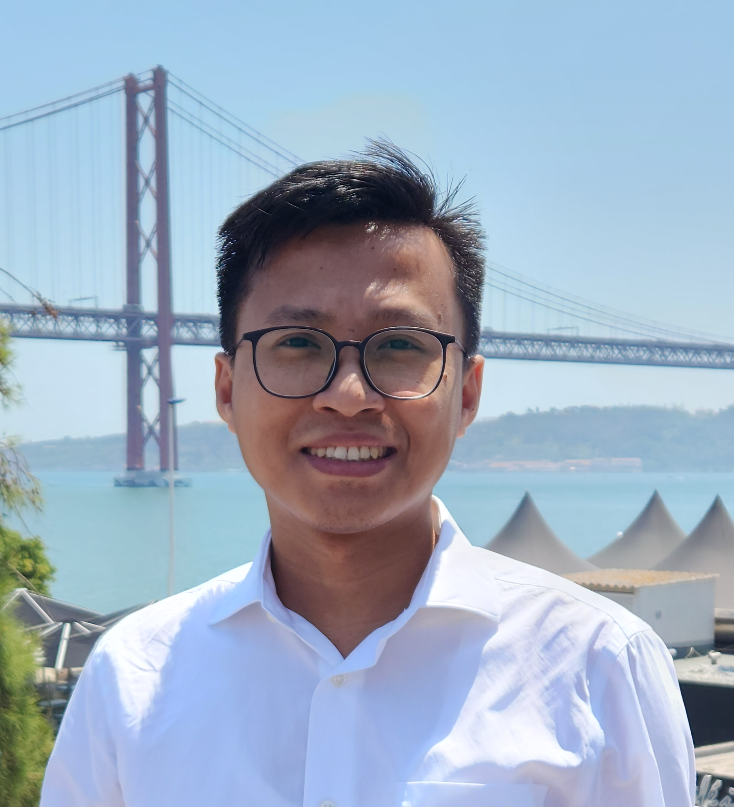

Tapas Tripura is a researcher in computational mechanics and scientific machine learning. He received his B.Tech. in Civil Engineering from NERIST and his M.Tech. in Structural Engineering from IIT Guwahati. He is pursuing his Ph.D. in the Department of Applied Mechanics at IIT Delhi, where he is affiliated with the Center for Scientific Computing and Computational Mechanics.
His research sits at the intersection of physics, computation and artificial intelligence: data-driven discovery of physical systems, operator learning, scientific foundation modeling, and reinforcement learning for intelligent control of mechanical systems. He introduced the Wavelet Neural Operator (WNO), proposed a Lagrangian discovery framework for uncovering governing equations directly from data, and developed the scientific foundation model Neural Combinatorial Wavelet Neural Operator (NCWNO). He is a recipient of the Prime Minister’s Research Fellowship (PMRF), awarded by the Ministry of Education, Government of India.
- Position
- Research scholar, Department of Applied Mechanics, IIT Delhi
- Thesis
- Data-driven online model-predictive control of systems with unknown physics
- Supervisor
- Dr. Souvik Chakraborty
- Lab
- Center for Scientific Computing and Computational Mechanics
- Fellowship
- Prime Minister’s Research Fellowship (PMRF)
Research interests
- Bayesian machine learning and uncertainty quantification
- Deep learning for mechanics
- Active control and model predictive control
- Physics discovery
- Neural operators and scientific foundation models
- Deep reinforcement learning